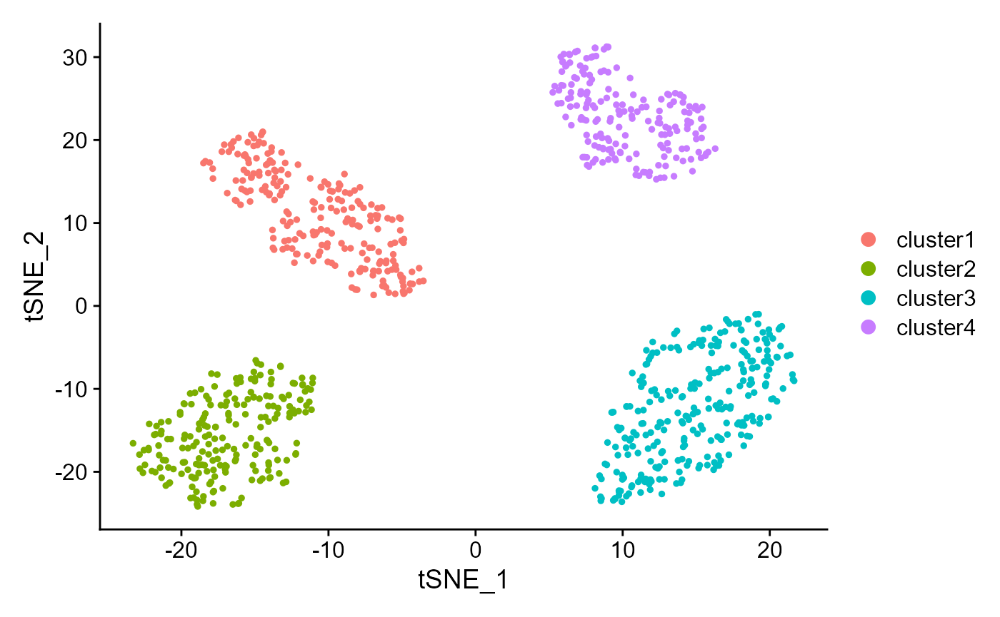
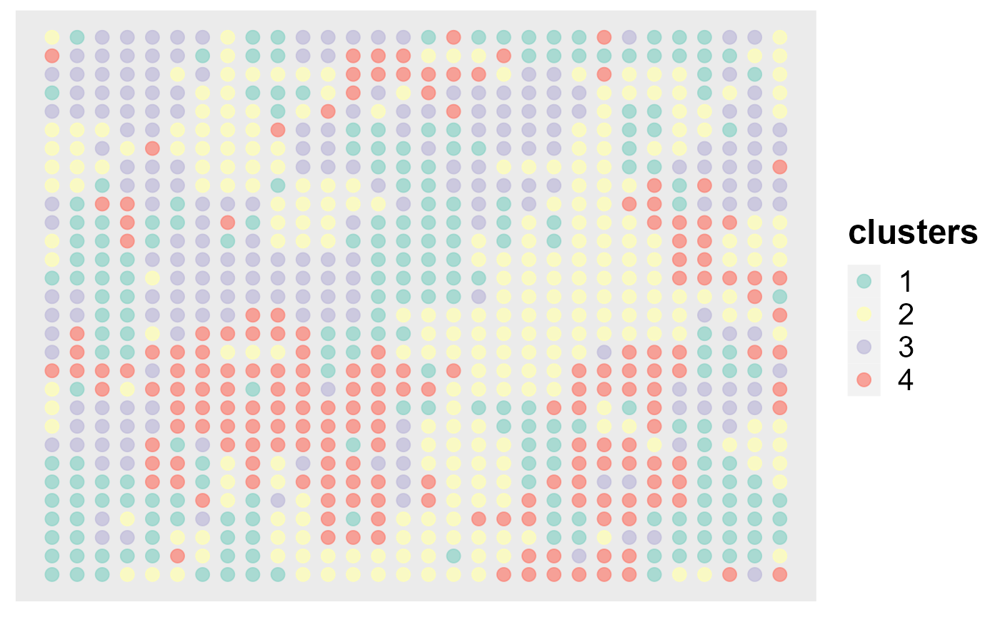

DR-SC: installation and simulation
Wei Liu
2021-10-06
DR.SC.Simu.RmdInstall the DR.SC
This vignette provides an introduction to the R package DR.SC, where the function DR.SC implements the model DR-SC, spatial clustering with hidden Markov random field using empirical Bayes. The package can be installed with the command:
remotes::install_github("feiyoung/DR.SC")
The package can be loaded with the command:
library("DR.SC")
#> Loading required package: mclust
#> Package 'mclust' version 5.4.7
#> Type 'citation("mclust")' for citing this R package in publications.
#> Loading required package: Matrix
#> Loading required package: SingleCellExperiment
#> Loading required package: SummarizedExperiment
#> Loading required package: MatrixGenerics
#> Loading required package: matrixStats
#>
#> Attaching package: 'MatrixGenerics'
#> The following objects are masked from 'package:matrixStats':
#>
#> colAlls, colAnyNAs, colAnys, colAvgsPerRowSet, colCollapse,
#> colCounts, colCummaxs, colCummins, colCumprods, colCumsums,
#> colDiffs, colIQRDiffs, colIQRs, colLogSumExps, colMadDiffs,
#> colMads, colMaxs, colMeans2, colMedians, colMins, colOrderStats,
#> colProds, colQuantiles, colRanges, colRanks, colSdDiffs, colSds,
#> colSums2, colTabulates, colVarDiffs, colVars, colWeightedMads,
#> colWeightedMeans, colWeightedMedians, colWeightedSds,
#> colWeightedVars, rowAlls, rowAnyNAs, rowAnys, rowAvgsPerColSet,
#> rowCollapse, rowCounts, rowCummaxs, rowCummins, rowCumprods,
#> rowCumsums, rowDiffs, rowIQRDiffs, rowIQRs, rowLogSumExps,
#> rowMadDiffs, rowMads, rowMaxs, rowMeans2, rowMedians, rowMins,
#> rowOrderStats, rowProds, rowQuantiles, rowRanges, rowRanks,
#> rowSdDiffs, rowSds, rowSums2, rowTabulates, rowVarDiffs, rowVars,
#> rowWeightedMads, rowWeightedMeans, rowWeightedMedians,
#> rowWeightedSds, rowWeightedVars
#> Loading required package: GenomicRanges
#> Loading required package: stats4
#> Loading required package: BiocGenerics
#> Warning: package 'BiocGenerics' was built under R version 4.0.5
#> Loading required package: parallel
#>
#> Attaching package: 'BiocGenerics'
#> The following objects are masked from 'package:parallel':
#>
#> clusterApply, clusterApplyLB, clusterCall, clusterEvalQ,
#> clusterExport, clusterMap, parApply, parCapply, parLapply,
#> parLapplyLB, parRapply, parSapply, parSapplyLB
#> The following objects are masked from 'package:stats':
#>
#> IQR, mad, sd, var, xtabs
#> The following objects are masked from 'package:base':
#>
#> anyDuplicated, append, as.data.frame, basename, cbind, colnames,
#> dirname, do.call, duplicated, eval, evalq, Filter, Find, get, grep,
#> grepl, intersect, is.unsorted, lapply, Map, mapply, match, mget,
#> order, paste, pmax, pmax.int, pmin, pmin.int, Position, rank,
#> rbind, Reduce, rownames, sapply, setdiff, sort, table, tapply,
#> union, unique, unsplit, which.max, which.min
#> Loading required package: S4Vectors
#>
#> Attaching package: 'S4Vectors'
#> The following object is masked from 'package:Matrix':
#>
#> expand
#> The following object is masked from 'package:base':
#>
#> expand.grid
#> Loading required package: IRanges
#>
#> Attaching package: 'IRanges'
#> The following object is masked from 'package:grDevices':
#>
#> windows
#> Loading required package: GenomeInfoDb
#> Warning: package 'GenomeInfoDb' was built under R version 4.0.5
#> Loading required package: Biobase
#> Welcome to Bioconductor
#>
#> Vignettes contain introductory material; view with
#> 'browseVignettes()'. To cite Bioconductor, see
#> 'citation("Biobase")', and for packages 'citation("pkgname")'.
#>
#> Attaching package: 'Biobase'
#> The following object is masked from 'package:MatrixGenerics':
#>
#> rowMedians
#> The following objects are masked from 'package:matrixStats':
#>
#> anyMissing, rowMedians
#> Loading required package: MASS
#> Warning: package 'MASS' was built under R version 4.0.4
#> Loading required package: purrr
#>
#> Attaching package: 'purrr'
#> The following object is masked from 'package:GenomicRanges':
#>
#> reduce
#> The following object is masked from 'package:IRanges':
#>
#> reduce
#> The following object is masked from 'package:mclust':
#>
#> map
#> Loading required package: doSNOW
#> Warning: package 'doSNOW' was built under R version 4.0.5
#> Loading required package: foreach
#>
#> Attaching package: 'foreach'
#> The following objects are masked from 'package:purrr':
#>
#> accumulate, when
#> Loading required package: iterators
#> Loading required package: snow
#>
#> Attaching package: 'snow'
#> The following objects are masked from 'package:BiocGenerics':
#>
#> clusterApply, clusterApplyLB, clusterCall, clusterEvalQ,
#> clusterExport, clusterMap, clusterSplit, parApply, parCapply,
#> parLapply, parRapply, parSapply
#> The following objects are masked from 'package:parallel':
#>
#> clusterApply, clusterApplyLB, clusterCall, clusterEvalQ,
#> clusterExport, clusterMap, clusterSplit, makeCluster, parApply,
#> parCapply, parLapply, parRapply, parSapply, splitIndices,
#> stopCluster
#> Loading required package: Seurat
#> Attaching SeuratObject
#>
#> Attaching package: 'Seurat'
#> The following object is masked from 'package:SummarizedExperiment':
#>
#> Assays
#> Loading required package: RColorBrewer
#> Loading required package: ggplot2Fit DR-SC using simulated data
Generating the simulated data
First, we generate the spatial transcriptomics data with lattice neighborhood, i.e. ST platform.
seu <- gendata_RNAExp(height=30, width=30,p=500, K=4)
#> Loading required package: GiRaF
#> Warning: package 'GiRaF' was built under R version 4.0.4
#> Warning: The following arguments are not used: row.names
head(seu@meta.data)
#> orig.ident nCount_RNA nFeature_RNA row col imagerow imagecol
#> spot-1 SeuratProject 1631885 500 1 1 1 1
#> spot-2 SeuratProject 2138381 500 2 1 2 1
#> spot-3 SeuratProject 1867949 500 3 1 3 1
#> spot-4 SeuratProject 3021387 500 4 1 4 1
#> spot-5 SeuratProject 2590291 500 5 1 5 1
#> spot-6 SeuratProject 2995910 500 6 1 6 1
#> true_clusters
#> spot-1 1
#> spot-2 1
#> spot-3 1
#> spot-4 4
#> spot-5 4
#> spot-6 4Fitting model by using DR.SC function
For function DR.SC, users can specify the number of clusters \(K\) or set {K=NULL} by using modified BIC(MBIC) to determine \(K\). First, we try using user-specified number of clusters. Then we show the version chosen by MBIC.
### Given K
library(Seurat)
seu <- NormalizeData(seu)
# choose 2000 variable features using Seurat
seu <- FindVariableFeatures(seu, nfeatures = 2000)
seu2 <- DR.SC(seu, K=4, platform = 'ST', verbose=F)
#> Neighbors were identified for 900 out of 900 spots.
#> Warning in DR.SC.Seurat(seu, K = 4, platform = "ST", verbose = F): nrow(seu) is
#> less than nfeatures, so assign nfeatures with nrow(seu)!
#> Fit DR-SC model...
#> elasped time is : 9.76 0.73 10.33 NA NA
#> Finish DR-SC model fittingUsing ARI to check the performance of clustering
mclust::adjustedRandIndex(seu2$spatial.drsc.cluster, seu$true_clusters)
#> [1] 1Show the spatial scatter plot for clusters
spatialPlotClusters(seu2)Show the tSNE plot based on the extracted features from DR-SC.
drscPlot(seu2) Show the UMAP plot based on the extracted features from DR-SC.
Show the UMAP plot based on the extracted features from DR-SC.
drscPlot(seu2, visu.method = 'UMAP')
#> Warning: The default method for RunUMAP has changed from calling Python UMAP via reticulate to the R-native UWOT using the cosine metric
#> To use Python UMAP via reticulate, set umap.method to 'umap-learn' and metric to 'correlation'
#> This message will be shown once per session
#> Warning: Invalid name supplied, making object name syntactically valid. New
#> object name is RunUMAP.RNA.dr.sc; see ?make.names for more details on syntax
#> validity
Use MBIC to choose number of clusters:
seu2 <- DR.SC(seu, q=10, K=NULL, K_set =2:6, platform = 'ST', verbose=F)
#> Neighbors were identified for 900 out of 900 spots.
#> Warning in DR.SC.Seurat(seu, q = 10, K = NULL, K_set = 2:6, platform = "ST", :
#> nrow(seu) is less than nfeatures, so assign nfeatures with nrow(seu)!
#> Start chooing number of clusters...
#> The candidate set is: 2 3 4 5 6
#>
|
| | 0%
|
|================== | 25%
|
|=================================== | 50%
|
|==================================================== | 75%
|
|======================================================================| 100%
#> The best number of cluster is: 4
#> Fit DR-SC model...
#> elasped time is : 6.18 1.33 8.19 NA NA
#> Finish DR-SC model fitting
mbicPlot(seu2)
Visualizations of marker gene expression
Ridge plots
Visualize single cell expression distributions in each cluster from Seruat.
genes <- c("gene-24","gene-68", "gene-95","gene-55")
RidgePlot(seu2, features = genes, ncol = 2)
#> Picking joint bandwidth of 0.323
#> Picking joint bandwidth of 0.335
#> Picking joint bandwidth of 0.336
#> Picking joint bandwidth of 0.323### Violin plot Visualize single cell expression distributions in each cluster
VlnPlot(seu2, features = genes, ncol=2)### Feature plot We extract tSNE based on the features from DR-SC and then visualize feature expression in the low-dimensional space
seu2 <- RunTSNE(seu2, reduction="dr-sc", reduction.key='drsc_tSNE_')
#> Warning: Keys should be one or more alphanumeric characters followed by an
#> underscore, setting key from drsc_tSNE_ to drsctSNE_
#> Warning: All keys should be one or more alphanumeric characters followed by an
#> underscore '_', setting key to drsctSNE_
FeaturePlot(seu2, features = genes, reduction = 'tsne' ,ncol=2)Dot plots
The size of the dot corresponds to the percentage of cells expressing the feature in each cluster. The color represents the average expression level
DotPlot(seu2, features = genes)
Session information
sessionInfo()
#> R version 4.0.3 (2020-10-10)
#> Platform: x86_64-w64-mingw32/x64 (64-bit)
#> Running under: Windows 10 x64 (build 19043)
#>
#> Matrix products: default
#>
#> locale:
#> [1] LC_COLLATE=Chinese (Simplified)_China.936
#> [2] LC_CTYPE=Chinese (Simplified)_China.936
#> [3] LC_MONETARY=Chinese (Simplified)_China.936
#> [4] LC_NUMERIC=C
#> [5] LC_TIME=Chinese (Simplified)_China.936
#>
#> attached base packages:
#> [1] parallel stats4 stats graphics grDevices utils datasets
#> [8] methods base
#>
#> other attached packages:
#> [1] GiRaF_1.0.1 DR.SC_2.2
#> [3] ggplot2_3.3.5 RColorBrewer_1.1-2
#> [5] SeuratObject_4.0.2 Seurat_4.0.3
#> [7] doSNOW_1.0.19 snow_0.4-3
#> [9] iterators_1.0.13 foreach_1.5.1
#> [11] purrr_0.3.4 MASS_7.3-53.1
#> [13] SingleCellExperiment_1.12.0 SummarizedExperiment_1.20.0
#> [15] Biobase_2.50.0 GenomicRanges_1.42.0
#> [17] GenomeInfoDb_1.26.7 IRanges_2.24.1
#> [19] S4Vectors_0.28.1 BiocGenerics_0.36.1
#> [21] MatrixGenerics_1.2.1 matrixStats_0.58.0
#> [23] Matrix_1.2-18 mclust_5.4.7
#>
#> loaded via a namespace (and not attached):
#> [1] systemfonts_1.0.2 plyr_1.8.6 igraph_1.2.6
#> [4] lazyeval_0.2.2 splines_4.0.3 listenv_0.8.0
#> [7] scattermore_0.7 digest_0.6.27 htmltools_0.5.1.1
#> [10] fansi_0.5.0 magrittr_2.0.1 memoise_2.0.0
#> [13] tensor_1.5 cluster_2.1.1 ROCR_1.0-11
#> [16] globals_0.14.0 pkgdown_1.6.1 spatstat.sparse_2.0-0
#> [19] colorspace_2.0-0 ggrepel_0.9.1 textshaping_0.3.5
#> [22] xfun_0.22 dplyr_1.0.5 crayon_1.4.1
#> [25] RCurl_1.98-1.2 jsonlite_1.7.2 spatstat.data_2.1-0
#> [28] survival_3.2-7 zoo_1.8-9 glue_1.4.2
#> [31] polyclip_1.10-0 gtable_0.3.0 zlibbioc_1.36.0
#> [34] XVector_0.30.0 leiden_0.3.7 DelayedArray_0.16.0
#> [37] future.apply_1.7.0 abind_1.4-5 scales_1.1.1
#> [40] DBI_1.1.1 miniUI_0.1.1.1 Rcpp_1.0.7
#> [43] viridisLite_0.4.0 xtable_1.8-4 reticulate_1.18
#> [46] spatstat.core_2.0-0 htmlwidgets_1.5.3 httr_1.4.2
#> [49] ellipsis_0.3.2 ica_1.0-2 farver_2.1.0
#> [52] pkgconfig_2.0.3 sass_0.3.1 uwot_0.1.10
#> [55] deldir_0.2-10 utf8_1.2.1 labeling_0.4.2
#> [58] tidyselect_1.1.1 rlang_0.4.11 reshape2_1.4.4
#> [61] later_1.1.0.1 munsell_0.5.0 tools_4.0.3
#> [64] cachem_1.0.4 generics_0.1.0 ggridges_0.5.3
#> [67] evaluate_0.14 stringr_1.4.0 fastmap_1.1.0
#> [70] yaml_2.2.1 ragg_1.1.3 goftest_1.2-2
#> [73] knitr_1.31 fs_1.5.0 fitdistrplus_1.1-3
#> [76] RANN_2.6.1 pbapply_1.4-3 future_1.21.0
#> [79] nlme_3.1-152 mime_0.10 compiler_4.0.3
#> [82] plotly_4.9.3 png_0.1-7 spatstat.utils_2.1-0
#> [85] tibble_3.1.2 bslib_0.2.4 stringi_1.7.3
#> [88] highr_0.8 desc_1.3.0 lattice_0.20-41
#> [91] vctrs_0.3.8 pillar_1.6.1 lifecycle_1.0.0
#> [94] spatstat.geom_2.0-1 lmtest_0.9-38 jquerylib_0.1.3
#> [97] RcppAnnoy_0.0.18 data.table_1.14.0 cowplot_1.1.1
#> [100] bitops_1.0-6 irlba_2.3.3 httpuv_1.5.5
#> [103] patchwork_1.1.1 R6_2.5.0 promises_1.2.0.1
#> [106] KernSmooth_2.23-18 gridExtra_2.3 parallelly_1.23.0
#> [109] codetools_0.2-18 assertthat_0.2.1 rprojroot_2.0.2
#> [112] withr_2.4.2 sctransform_0.3.2 GenomeInfoDbData_1.2.4
#> [115] mgcv_1.8-34 grid_4.0.3 rpart_4.1-15
#> [118] tidyr_1.1.3 rmarkdown_2.7 Rtsne_0.15
#> [121] shiny_1.6.0